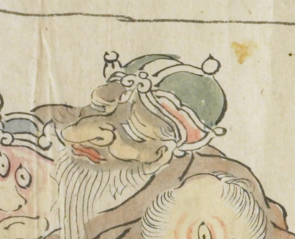

酔い潰れた鬼。緑色の冠をかぶっている。顎からは白い髭が伸びており、大きな鼻をしている。眠っているようである。
出典：親書誌：U426_nichibunken_0079：酒天童子絵巻；シュテンドウジエマキ／日付：2006／資源識別子：U426_nichibunken_0079_0009_0009
Copyright (c)2010- International Research Center for Japanese Studies, Kyoto, Japan. All rights reserved.